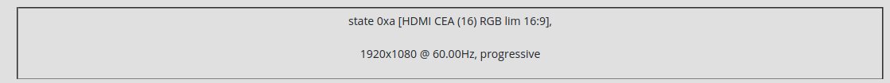

CONTROL PANEL¶
Videotutorial: https://video.pocketvj.com/AVideo/video/15/pocketvj_rtc_overview
Make sure your PocketVJ is powered up and running.
On your computer, phone or tablet, go to the wifi and connect to your PocketVJ’s Wifi network. Its named
vj100or something similar starting withvj___.
Enter the password fot the wifi connection (its printed onto the paper card) and wait until the connection is established.
Open a web-browser (use chrome) and enter into the wifi ip of your PocketVJ into the address bar:
http://2.0.0.100(this is depending on wifi name, see on the printed card). You see the Control Panel:
Note
Alternatively you can connect your PocketVJ via rj45 wired network (see below).
Make sure your router is configured to 192.168.2.1. Access via address: http://192.168.2.***
If you lost the sticker with the IP address, go to “Network Settings” and click ‘Display IP’.
There are some known issues with Safari / Edge / IE browsers = Use Chrome and its derivates.
SHORTLINKS¶
The Control Panel shows you a bunch of shortlinks and colored tabs:

The shortlinks from left to right are:
STOP => Stops all running tasks.
PLAY => Starts the Videoplayer as Master
PAUSE => Pause Video / Mapping
FASTFORWARD => Jump 20 Seconds forward in video
FILEBROWSER => Open FIlebrowser
SCREENSHOT => Take a screenshot of the current output, stores under images
TESTSCREEN => Display a testscreen
RESOLUTION CHECK => Check the current used resolution of the attached device
REBOOT => Reboots (make sure to close your browser widow to prevent boot loops!)
POWEROFF => Shuts down the PocketVJ
OUTPUT WINDOW¶
Below the shortlinks you have the Output Window which will display messages from selected functions:
COLORED TABS¶
The colored tabs contain the various control sections:
which are explained on the following pages.